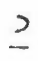
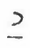
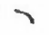
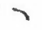

Lesson 7 - More on nasals
Lesson 7 - More on nasals

Nasal followed by G
When the short nasal sounds are followed by “G” the pronunciation of the syllables will not be an + g, on + g, etc., but a + ng, o + ng, etc. Add therefore the short vowel sign to the consonant sign ng.
Ex: song  , single
, single  , angle
, angle  , lasting
, lasting  , bring
, flung
, bring
, flung  , bangle
, bangle  , sing
, sing  , wrangle
, wrangle  , long
, long  , thing
, thing  .
.
NK
The sound “NK” is made up of ng + k :  +
+  and is stenographically expressed by adding the “K” sign to “ng”:
and is stenographically expressed by adding the “K” sign to “ng”:  .
.
Ex: bank  , sank
, sank  , brink
, brink  , ink
, ink  , wrinkle
, wrinkle  , link
, link  , wink
, wink  , sink
, sink  .
.
N.B. Although it is phonetically incorrect to express the sounds ank, ink, etc. by adding the “K” sign to the short nasal sign still it may be used as an abbreviated form of the sounds.
Ex: bank  , sank
, sank  , brink
, brink  , ink
, ink  , wrinkle
, wrinkle  , link
, link  , wink
, wink  , sink
, sink  .
.
Single vowels or nasal sounds
Words expressed by single vowel or nasal sounds are always represented by the sign appropriate to each in the synoptical vowel table.
Ex: I, eye  , high 
, he
, high 
, he  , eh
, eh  , an
, an  , on
, on  , in 
, hen
, in 
, hen  , you
, you  , hew
, hew  .
.